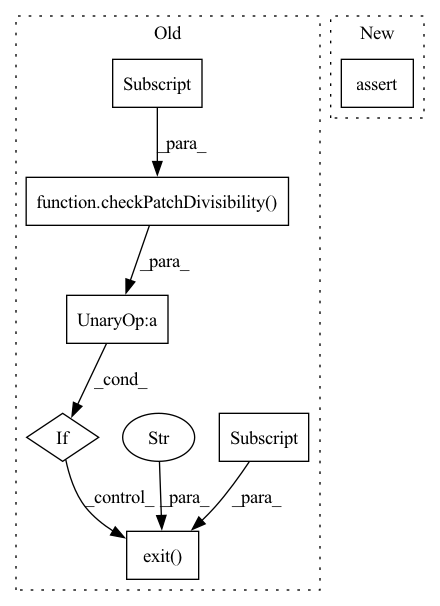

Pattern ID :17506
Before Change
self.network_kwargs = {"res": False}
if not (checkPatchDivisibility(parameters["patch_size"])) :
sys.exit(
"The patch size is not divisible by 16, which is required for" ,
parameters["model"]["architecture"] ,
)
self.ins = in_conv(
input_channels=self.n_channels,
output_channels=self.base_filters,After Change
self.network_kwargs = {"res": False}
assert checkPatchDivisibility(parameters["patch_size"]) == True, (
"The patch size is not divisible by 16, which is required for "
+ parameters["model"]["architecture"]
)In pattern: SUPERPATTERN
Frequency: 4
Non-data size: 7
Instances Fragment ID: 57992630
Project Name: cbica/gandlf
Commit Name: c284c04911c5e6e01fe2fe8e2f5cd4630f1bb302
Time: 2022-11-16
Author: sarthak.pati@hotmail.com
File Name: GANDLF/models/light_unet.py
M Class Name: light_unet
N Class Name: light_unet
M Method Name: __init__(3)
N Method Name: __init__(3)
M Parent Class: ModelBase
N Parent Class: ModelBase
M File Name: GANDLF/models/light_unet.py
N File Name: GANDLF/models/light_unet.py
M Start Line: 32
M End Line: 38
N Start Line: 32
N End Line: 35
Before Change
self.network_kwargs = {"res": residualConnections}
super(deep_unet, self).__init__(parameters)
if not (checkPatchDivisibility(parameters["patch_size"])) :
sys.exit(
"The patch size is not divisible by 16, which is required for" ,
parameters["model"]["architecture"] ,
)
self.ins = in_conv(
input_channels=self.n_channels,
output_channels=self.base_filters,After Change
self.network_kwargs = {"res": residualConnections}
super(deep_unet, self).__init__(parameters)
assert checkPatchDivisibility(parameters["patch_size"]) == True, (
"The patch size is not divisible by 16, which is required for "
+ parameters["model"]["architecture"]
) Fragment ID: 57992631
Project Name: cbica/gandlf
Commit Name: c284c04911c5e6e01fe2fe8e2f5cd4630f1bb302
Time: 2022-11-16
Author: sarthak.pati@hotmail.com
File Name: GANDLF/models/deep_unet.py
M Class Name: deep_unet
N Class Name: deep_unet
M Method Name: __init__(3)
N Method Name: __init__(3)
M Parent Class: ModelBase
N Parent Class: ModelBase
M File Name: GANDLF/models/deep_unet.py
N File Name: GANDLF/models/deep_unet.py
M Start Line: 33
M End Line: 39
N Start Line: 33
N End Line: 36
Before Change
):
super(uinc, self).__init__(parameters)
if not (checkPatchDivisibility(parameters["patch_size"])) :
sys.exit(
"The patch size is not divisible by 16, which is required for" ,
parameters["model"]["architecture"] ,
)
if parameters["model"]["base_filters"] % 4 != 0:
sys.exit(
"The "base_filters" should be divisible by "4""After Change
+ parameters["model"]["architecture"]
)
assert parameters["model"]["base_filters"] % 4 == 0, (
"The "base_filters" should be divisible by "4""
+ " for "
+ parameters["model"]["architecture"] Fragment ID: 57992632
Project Name: cbica/gandlf
Commit Name: c284c04911c5e6e01fe2fe8e2f5cd4630f1bb302
Time: 2022-11-16
Author: sarthak.pati@hotmail.com
File Name: GANDLF/models/uinc.py
M Class Name: uinc
N Class Name: uinc
M Method Name: __init__(2)
N Method Name: __init__(2)
M Parent Class: ModelBase
N Parent Class: ModelBase
M File Name: GANDLF/models/uinc.py
N File Name: GANDLF/models/uinc.py
M Start Line: 35
M End Line: 49
N Start Line: 35
N End Line: 44
Before Change
self.network_kwargs = {"res": residualConnections}
super(unet, self).__init__(parameters)
if not (checkPatchDivisibility(parameters["patch_size"])) :
sys.exit(
"The patch size is not divisible by 16, which is required for" ,
parameters["model"]["architecture"] ,
)
self.ins = in_conv(
input_channels=self.n_channels,
output_channels=self.base_filters,After Change
self.network_kwargs = {"res": residualConnections}
super(unet, self).__init__(parameters)
assert checkPatchDivisibility(parameters["patch_size"]) == True, (
"The patch size is not divisible by 16, which is required for "
+ parameters["model"]["architecture"]
) Fragment ID: 57992633
Project Name: cbica/gandlf
Commit Name: c284c04911c5e6e01fe2fe8e2f5cd4630f1bb302
Time: 2022-11-16
Author: sarthak.pati@hotmail.com
File Name: GANDLF/models/unet.py
M Class Name: unet
N Class Name: unet
M Method Name: __init__(3)
N Method Name: __init__(3)
M Parent Class: ModelBase
N Parent Class: ModelBase
M File Name: GANDLF/models/unet.py
N File Name: GANDLF/models/unet.py
M Start Line: 34
M End Line: 40
N Start Line: 34
N End Line: 37